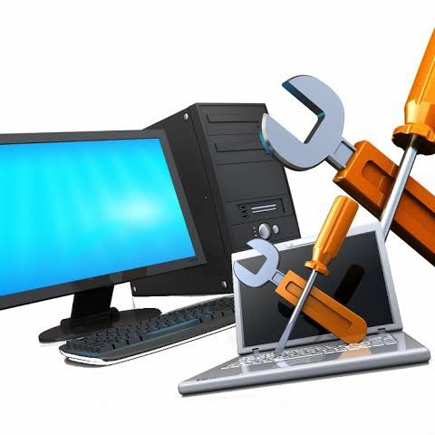

---Tentang Kami---
Profil perusahaan
Perusahaan kami bergerak di bidang jasa & maintenance.Pperusahaan kami memiliki 4 jasa Layanan yaitu : jasa layanan servis laptop,jasa layanan servis HP,jasa pembuatan software,dan jasa servis komputer dan perusahaankami juga menyediakan layanan berbasis online yaitu melewati via sosmed kami atau bisa langsung menghubungi pihak admin kami sekian terimakasih
Visi dan Misi
Visi
Menjadikan yang terdepan dalam bidang pengadaan gadget,komputer dan suku cadangnya dengan memberikan nilai kepuasan terbaik bagi pelanggan, melalui harga yang wajar, produk dan pelayanan yang berkualitas.
Misi
1.Mempermudah pelanggan untuk mendapatkan peralatan komputer dan suku cadangnya.
2.Membantu pelanggan dalam mengatasi kerusakan peralatan teknologi informasi dengan menyediakan jasa perbaikan.
3.Memberikan Informasi serta memberikan layanan pembuatan software yang terbaik dengan harga terangkau

Saya lulusan baru dengan gelar Sarjana Teknologi Informasi yang berkomitmen untuk mengembangkan karier di bidang IT. Memiliki pemahaman yang kuat dalam pemrograman dan teknologi informasi, kemampuan analitis yang baik untuk memecahkan masalah, serta ingin terus berinovasi dalam pengembangan teknologi.
| Nama | : adimas fandy bagus prasetyo |
| Nomor telepon | : 0821-3193-0787 |
| : kfandy44@gmail.com | |
| Lulusan | : S2 Teknologi Informasi ITS |
 Seiring perkembangan zaman dan teknologi yang semakin maju, handphone juga ikut berkembang. Fitur-fitur bawaan yang semakin lengkap dan canggih sering kali membuat kita terlena dan lupa waktu,
padahal smartphone juga memiliki kemampuan yang terbatas dan butuh istirahat agar tidak cepat rusak.
Berikut ini beberapa permasalahan yang sering terjadi pada smartphone.Overheat,Hang,Baterai Drop,Aplikasi Mendadak Berhenti (Force Close)
Touchscreen Tidak Sensitif,Bootloop
Seiring perkembangan zaman dan teknologi yang semakin maju, handphone juga ikut berkembang. Fitur-fitur bawaan yang semakin lengkap dan canggih sering kali membuat kita terlena dan lupa waktu,
padahal smartphone juga memiliki kemampuan yang terbatas dan butuh istirahat agar tidak cepat rusak.
Berikut ini beberapa permasalahan yang sering terjadi pada smartphone.Overheat,Hang,Baterai Drop,Aplikasi Mendadak Berhenti (Force Close)
Touchscreen Tidak Sensitif,Bootloop
 Merupakan suatu program yang ditulis dengan bahasa pemrograman tertentu untuk diterapkan pada bidang tertentu.
Contoh program aplikasi yang sering digunakan yaitu :
Merupakan suatu program yang ditulis dengan bahasa pemrograman tertentu untuk diterapkan pada bidang tertentu.
Contoh program aplikasi yang sering digunakan yaitu :
a. Microsoft Office
Microsoft Office adalah perangkat lunak paket aplikasi perkantoran buatan Mocrosoft dan dirancang untuk dijalankan di bawah sistem operasi Microsoft Windows dan Mac OS X. Beberapa aplikasi didalam Microsost Office yang terkenal adalah Word, Word dan PowerPoint.
b. Adobe Photoshop
Adobe Photoshop, atau biasa disebut Photoshop, adalah perangkat lunak editor buatan Adobe System yang dikhususkan untuk pengeditan foto/gambar dan pembuatan efek. Perangkat lunak ini banyak digunakan oleh fotografer digital dan perusahaan iklan sehingga dianggap sebagai pemimpin pasar (market leader) untuk perangkat lunak pengolah gambar/foto, dan, bersama Adobe Acrobat, dianggap sebagai produk terbaik yang pernah diproduksi oleh Adobe System.
Versi kedelapan aplikasi ini disebut dengan nama Photoshop CS (Creative Suite), versi sembilan disebut Adobe Photoshop CS2, versi sepuluh disebut Adobe Photoshop CS3 , versi kesebelas adalah Adobe Photoshop CS4 , versi keduabelas adalah Adobe Photoshop CS5 , dan seterusnya.
 Dalam upaya memenuhi layanan terhadap pengunjung situs jasaservis yang punya masalah dengan komputer atau laptop yang dimilikinya, Admin memuat informasi alamat jasa perbaikan komputer dan laptop yang siap melayani konsumen dengan penuh tanggung jawab, serta bersedia memberikan jaminan garansi atas hasil kerjanya, demi untuk kepuasan pemakai jasa. Mengenai biaya servis hendaknya pemakai jasa melakukan konsultasi di awal sebelum pekerjaan dimulai, karena kerusakan pada komputer/ laptop seringkali merupakan kerusakan multi cascade yang artinya masalah yang satu muncul akibat adanya masalah lain. Jika pada saat perbaikan ditemui hal seperti demikian, maka tukang servis akan memberitahukan solusi untuk memperbaikinya, tidak jarang hal ini yang kemudian menimbulkan kesalahpahaman dimana pemilik tidak bersedia untuk mengikuti petunjuk yang disarankan oleh tukang servis karena adanya biaya tambahan yang harus dikeluarkan, baik untuk biaya pembelian software maupun pembelian perangkat hardware.